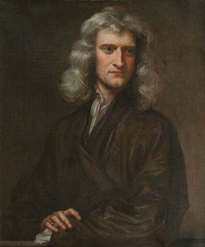

Newton and Javascript

I have recently developed an interest in understanding the life, times, and work of Isaac Newton. Reading a handful of books aimed at a general audience I learned a great deal, but realized that they gave little actual mathematical detail insight to his contributions. I have a PhD in mathematics, and have taught calculus, so I am certainly familiar with the modern version of the techniques he developed. But that is not the same thing as appreciating what it meant at the time. I have never had to connect anything in a calculus textbook to the subject of astronomy.
I wrote the following demonstration in javascript to illustrate the significance of Newton's inverse square law for gravity. This was the crux of much of what he achieved. Until Keplar, it had been believed that the planets observed in the night sky should conform the ideals of Euclidean geometry. That is to say that they should travel in perfect circles and at constant velocity. These assumption led to all kinds of problems. Even when Copernicus set the sun at the center of the solar system, it was impossible to get the observations to match the computations. Keplar, with better observational data, hypothesized that the orbits should in fact be elliptical.
Newton, in his Principia Mathematica outlined a mathematical framework that gave excellent predictive power, and confirmed Keplar's thesis of elliptical orbits. I could have sought out a proof that Keplar's fundamental laws of planetary motion can be derived from Newton's calculus, but I felt that it might be more rewarding to see how it could be exhibited computationally. The following animation applies a simple discrete time approximation of Newton's laws to draw out an elliptical orbit of the "earth" about the "sun". You can see that the velocity changes, the earth moving faster as it draws closer to the sun. Note that nothing here is "to scale". I have simply implemented the inverse square law to produce an ellipse.
x = , y =
dx = , dy =